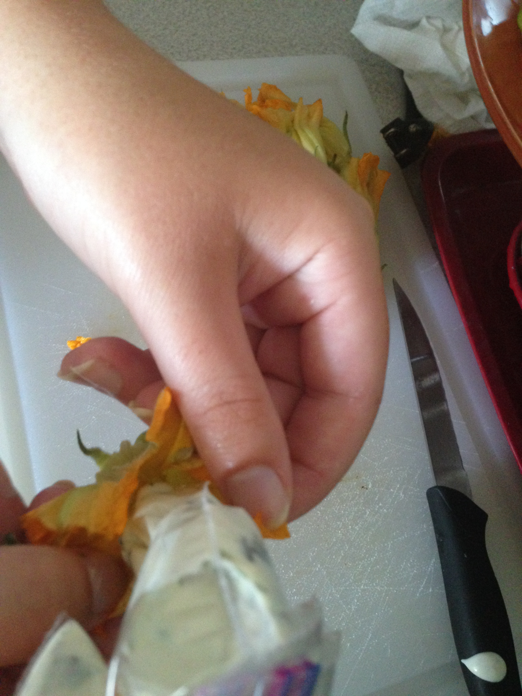
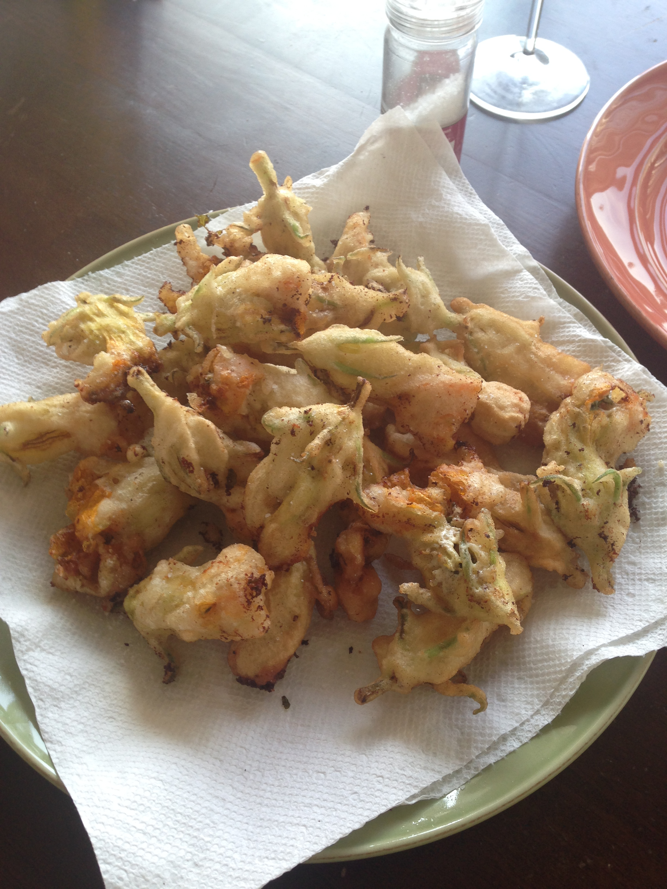

Hi Internet!
I have returned from my blogging hiatus (I guess that one post really tired me out?). It's been a pretty summer thus far, culminating in my recent return from an incredible Tuscan vacation. I went to Italy really excited to eat squash blossoms, as they're in season and tough to find here (I've seen them at one farmer's market but they're pricey and haven't looked impressive). I ordered them every time I saw them on a menu and they came fried to perfection in a tempura-like batter and were delicious. So, I tend to think it was nothing short of divine intervention that I returned to find squash blossoms in my first CSA share (PS this is my first CSA, loving it so far, will be blogging a dish made with CSA ingredients each week). Anyway, I told my friend Diana, who I'm sharing the CSA share with that squash blossoms were happening the following Sunday and she preceded to invite 2 other friends to share in the fried deliciousness.
Diana suggested we stuff the blossoms with cheese and who was I to argue? After all, cheese makes everything better. So she looked up a recipe from Giada that used a goat cheese and chive filling and we hit the grocery store. While I started to whisk a beautiful Marcella Hazan batter into submission, Diana, in true Diana fashion, realized that she should have reviewed the ingredients list before we left the grocery store...we needed cream...we had no cream...we improvised. I suppose I can call this an original recipe since the cream was replaced with 2% greek yogurt and skim milk. Who needs authenticity anyway?
Diana sliced off the top of the blossoms and pried them open while I squeezed the goat cheese stuffing in using a makeshift ziplock pastry bag.
I quickly dipped the stuffed blossoms into the batter and then hot vegetable oil and in just a few minutes something magical happened...
Finished them off with a sprinkle of sea salt and went at it. Internet, these were good, like really good. So good that I momentarily felt bad when Misha came over for dinner the next night and asked if there were any left. Psh, fool was invited, he should've known better! Ok Internet, I'll be back soon (promise)!